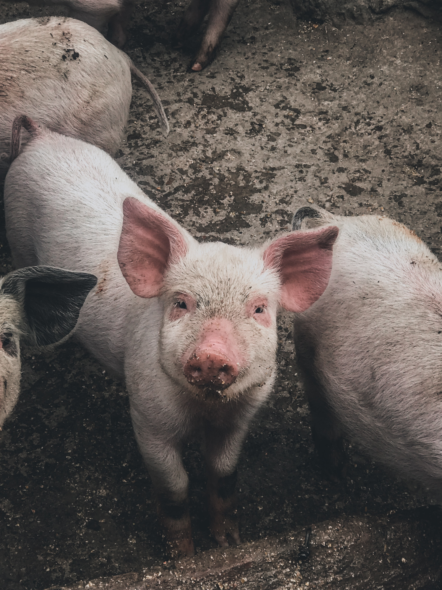

멧돼지와 돼지는 원래 유라시아와 아프리카에서만 살았고 아메리카와 오세아니아에서는 살지 않았다. 이후 아메리카와 오스트레일리아에 사는 돼지와 멧돼지들은 모두 인간이 데려온 외래종이다.
돼지는 더러운 동물이라는 인식이 있는데, 이는 인간이 축사 청소를 제대로 해주지 않으면 돼지가 체온 유지를 위해 자신의 배설물 속에서 뒹굴기 때문이다. 돼지의 몸에는 땀샘이 많지 않은데, 땀샘은 돼지의 코와 항문에 국한되어 있다. 때문에 돼지가 스스로 체온을 낮추려면 물이 있어야 한다. 야생에서 돼지가 진흙 목욕을 좋아하는 이유도 이것이다. 아프리카 혹멧돼지를 제외하면 대부분의 돼지(멧돼지 포함)는 원래 숲이나 늪지대처럼 물이 충분하고 시원한 곳에서 살던 동물이다. 이것 때문에 더럽다는 인식이 있는 것. 하지만 축사가 적당한 면적이라면 용변도 한 곳에서만 보는 매우 청결한 동물이다. 